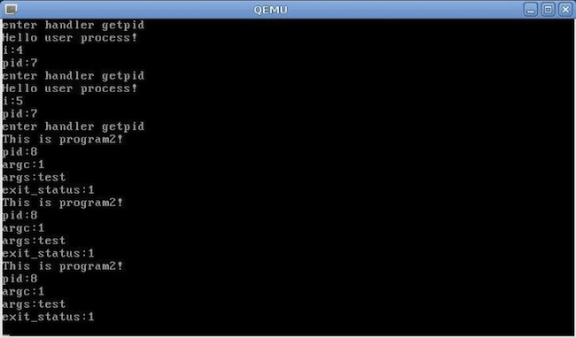

ProjectsSome codings and ideas
A scalable distributed crawler framework with capabilities of parsing javascript and solving captchas. Designed to crawl a Quora-like site called Zhihu. Can be applied for various crawling tasks.
https://github.com/immzz/zhihu-scrapy
A course assignment of Introduction to Data Mining Assignment Page
My model was ranked 2nd. Here is the breif intro to my solution.
The features extracted were:
I experimented with several algorithms. The performance was measured by F1 score. The algorithms with the best scores were Bayes, SVM and Hidden Markov Model.
To improve the accuracy, I designed a Voting model to combine the result sets of the classification algorithms. The performance before and after Voting is shown below.
| Bayes | SVM | HMM | Voting | |
|---|---|---|---|---|
| Sum of F1 | 9.6259 | 9.3893 | 9.7448 | 10.2760 |
The basic idea is to divide the training set into diffenrent parts, each with different weight. Then train these parts with different learning algorithms. Eventually vote for the best prediction result according to votes and weights.
The development lasted for three months, including three stages: Context Switch, Inter-Process Communication and User Process & Memory Management.
Reading and executing a user process that contains one Fork operation.
The compiled OS image are provided below. If you would like to try it on your own machine, please follow the instructions:
1. Download image HERE;
2. Make sure that QEMU is properly installed on your OS or VM;
3. Run qemu lab3.img
One interesting part is that we were required to design a game at first assignment, running without the operating system. Also available for download: The Lab 0 Game. Here is a glance at my game:
This is a course design in Java Programming. We were required to build a distributed system using Java. We practiced a semi-P2P structure in this project. In this system, the so called Super Nodes act as the Masters. But one thing that distinguishes this system from Master/Slave structure is that these Super Nodes can be elected again by the system itself. Once any Super Node breaks down, it can be quickly replaced.
As for system monitoring, any node that is not a Super Node must send heartbeats to the nearby Super Node, and Super Nodes share the information they've got with each other.
Some screenshots:
This is a course design in Software Engineering. The 'BTOOOM!!' name originates from the famous cartoon of the same name. We divided the development into 3 parts: Graphics, Game Logic, Network Connection. The project management was based on IBM Rational Requirements Composer(RRC). However, the coding part was collaborated via Github. If you are interested in it, here are some resources: